Context
Research Synthesis
I used both in-depth interviews and large-scale surveys. By bringing together direct interviews, broad surveys, and market trends, we turned our assumptions into a user profile supported by data.
5 Interviews
Deep-dive sessions with Lighthouse Customers to uncover unarticulated pain points in the drafting workflow.
50+ Responses
Broad Fusion User Surveys identifying high-frequency friction points and automation expectations across the user base.
Market Research
Analysis of industry shifts toward model-based definition and the competitive landscape of CAD automation.
Persona
Jon, 34
Lead Mechanical Engineer
Automotive Supplier
"I don't only need the software to be 'smart.' I need it to be fast, predictable, and transparent."
Professional Bio
Jon connects the finished 3D model to the shop floor. In the automotive supply chain, he creates the detailed 2D technical drawings that guide CNC machines. He often works under tight deadlines and spends hours adding dimensions by hand, which can lead to mistakes and slowdowns from repetitive drafting work.
Key Goals
- + Zero downtime on shop floor.
- + High process repeatability.
- + Error reduction in creation.
Pain Points
- × Fear of "Black Box" errors.
- × Severe click fatigue.
- × Inconsistent automation results.
Production Priorities
Interaction Profile
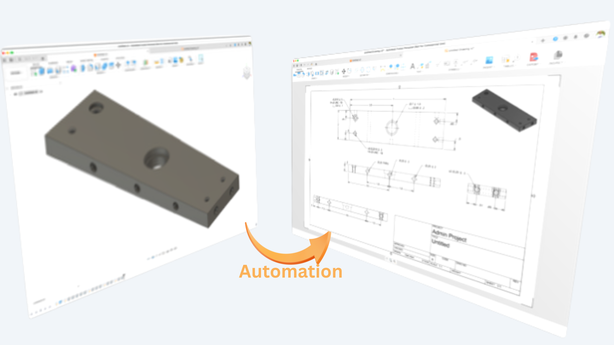
The Scope: Automating the Mundane
Target the most repetitive, time-consuming parts of creating 2D documentation:.
- Dimensioning and Annotation Placement
- View Creation, Rotation, and Placement
- BOM Generation and Placement
The Business Case: Scaling through Efficiency
The investment in Drawing Automation wasn't just about saving time; it was a strategic move to enable our customers to scale. This shift to automate 2D documentation directly impacts ROI by increasing shop floor capacity and reducing error-related production costs.
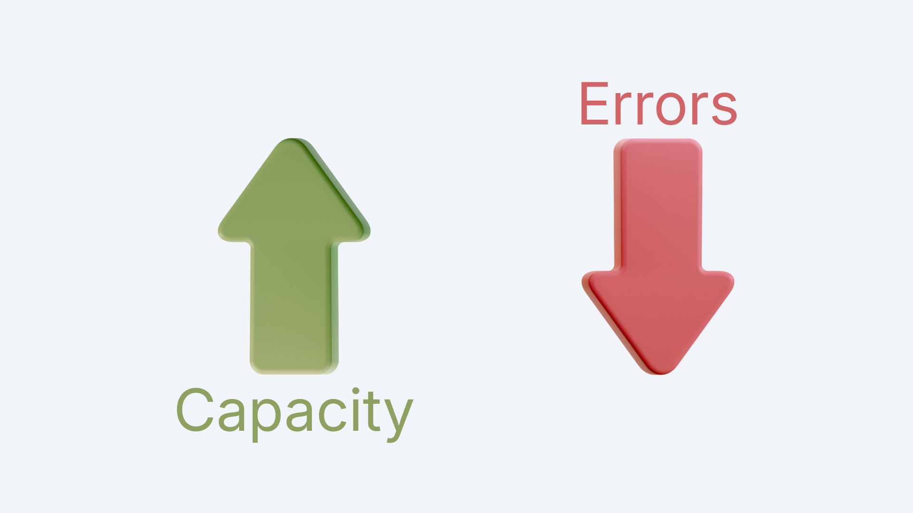
Strategic Alignment: Stakeholder Mapping
I organized our stakeholders based on how much influence and interest they have in the project. Instead of just making a list, I used this as a guide to see where I should focus on building trust to improve user transparency.
Manage Closely
The engine room. I worked daily with the Dev Team and Product Manager to align on logic transparency.
Keep Satisfied
The Dev Architect was key to managing technical debt and ensuring UI decisions were feasible.
Keep Informed
Leadership roles like the VP who needed high-level proof that UX was driving ROI.
Monitor
Sales and Marketing were kept in the loop for future market evangelism.
Requirements
Goals & Tasks
Users wanted us to focus on the high-friction moments with the goal to turn a lengthy, manual process, into a 5-minute automated one.
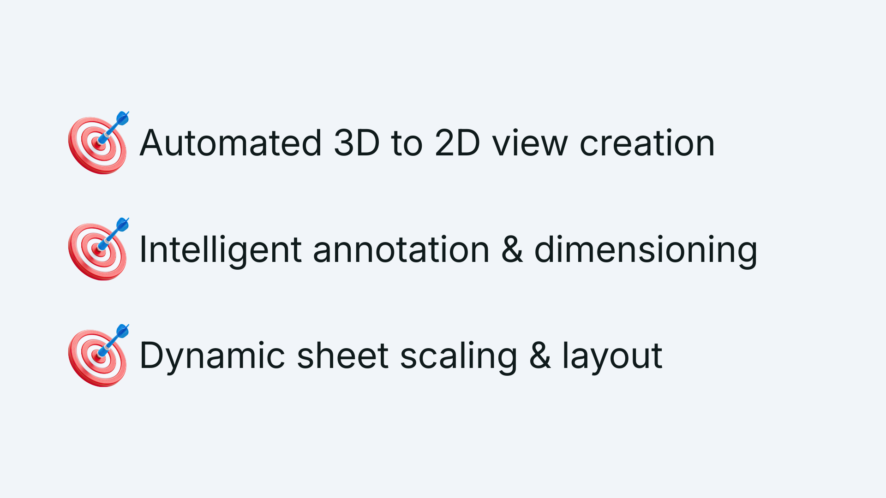
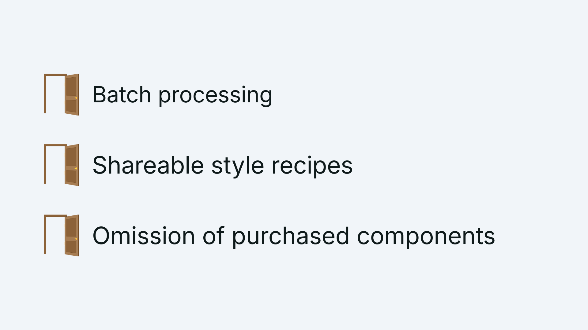
Opportunities
Beyond just speed, we found chances to fundamentally change how the team worked.
Functional & Usability Requirements
User's wanted full visibility and control over what was being created during the automation process.
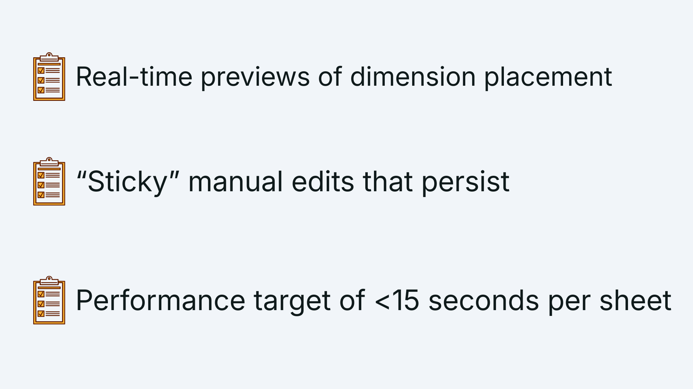
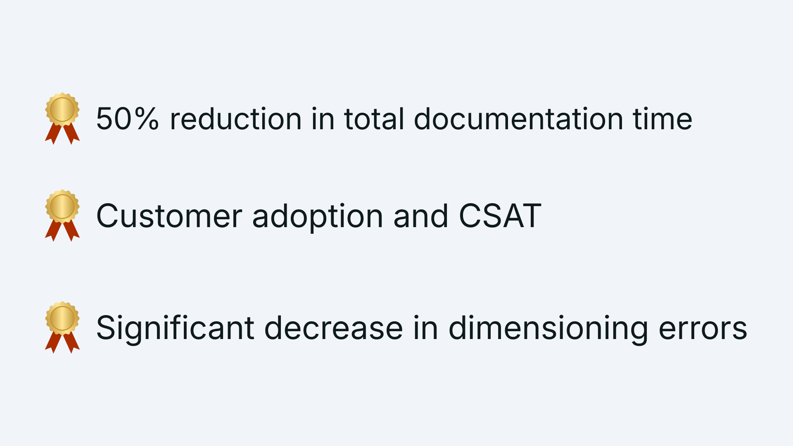
Success Criteria
We didn't just want to build a tool; we wanted to solve a bottleneck.
Design Solutions
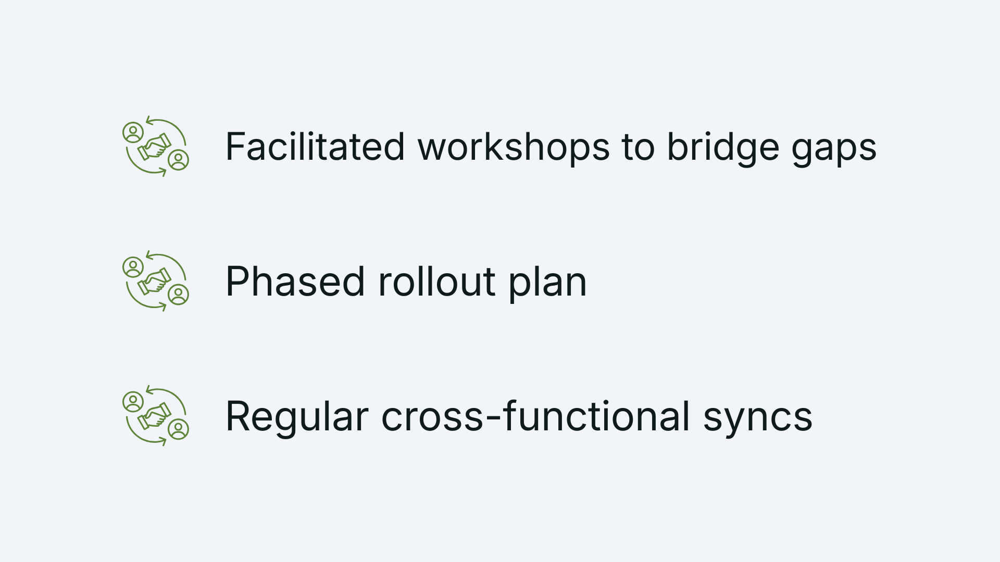
Stakeholder Alignment
Joining a project mid-stream required building trust quickly. I focused on aligning the leadership's vision with the users' actual readiness, moving us from a "black box" approach to a transparent, phased rollout.
Wireframes
I started with rough wireframes to explore various options related to command access and control/visibility for the user while keep the process streamlined and requiring limited user interaction, unless absolutely necessary or desired by the user.
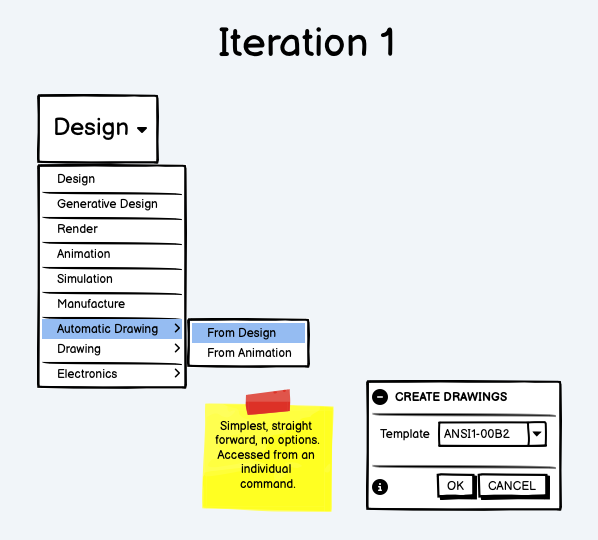
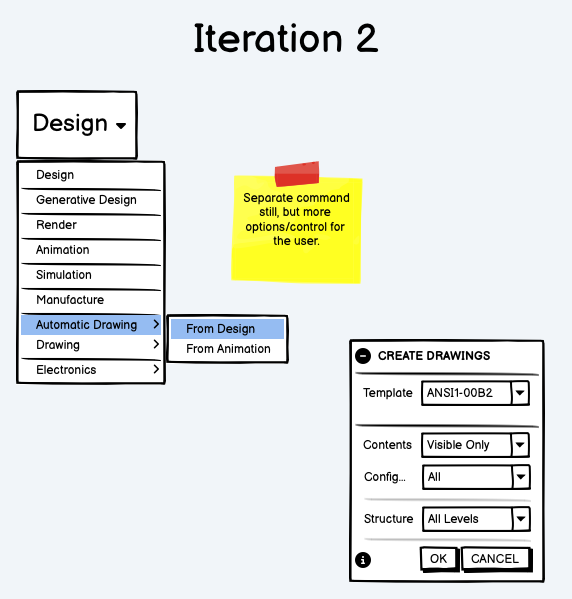
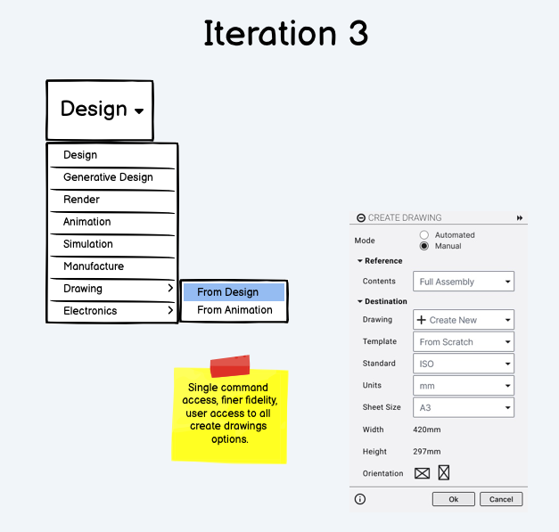
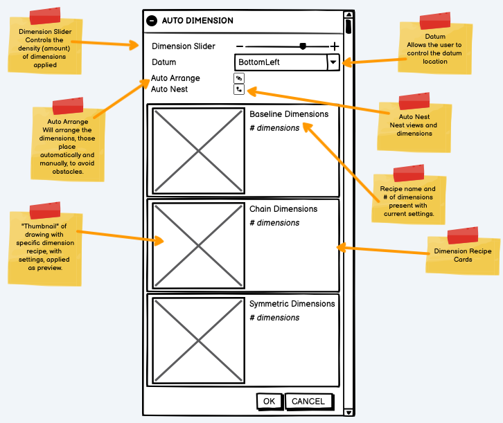
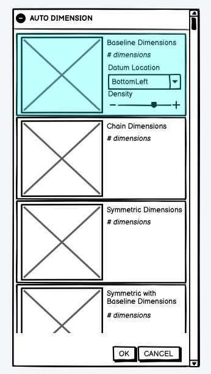
Prototyping the Solution
I built an interactive prototype to demonstrate the workflow and gather further feedback from users and stakeholders.

Evaluation
Feedback Loop
Validation through iteration.
I tested the ideas rather than relying on guesses. By bringing in Lighthouse Customers early, I put our wireframes and prototypes to the test. This helped to maintain a high "Trust Score" throughout the process.
- • Weekly design critiques with the Dev Architect and Product Manager
- • Bi-weekly usability sessions with Lead Engineers
- • Real-time feedback via dedicated Slack channels
The Heuristic Audit
I started with a deep-dive audit to understand what the team had done prior to my involvement and identify any issues that needed to be addressed prior to the first public release.
Issue 1: Cognitive Load
The original settings interface was cluttered with too many inputs. For engineers working quickly, this made things difficult. I redesigned it to show only the most important information that users actually need to control.
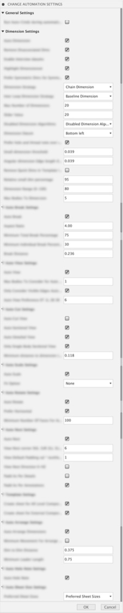
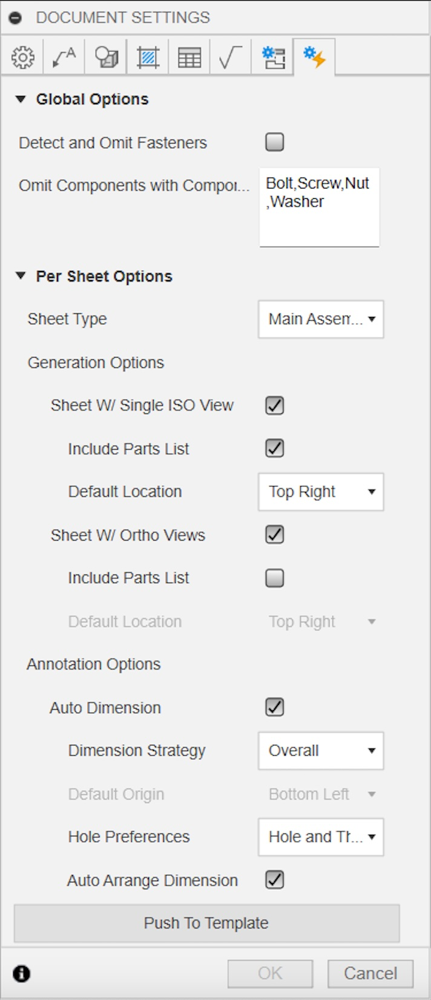
Issue 2: Transparency
Jon was most worried about not knowing what the machine was doing. To address this, we added a live sheet count. Now, engineers can see exactly what will happen before they click "Generate."
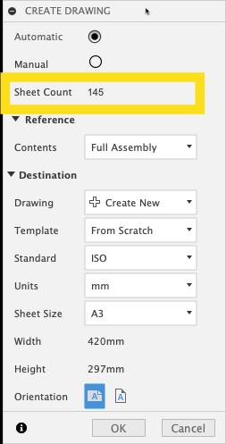
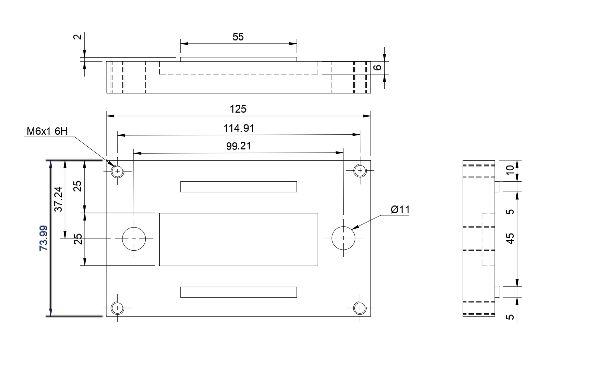
Issue 3: Accuracy
Automation only helps if it works correctly. I found that the system was reaching a set limit and missing important dimensions. I teamed up with others to fix these settings and, just as important, made sure the user could adjust the limits. This way, "Jon" would not feel like the system was letting him down.
The Engagement Plan
I didn't just want to build for the users; I wanted to build with them. I established a structured engagement plan to turn our most vocal critics into our most valuable collaborators throughout the process.
User Recruitment
-
01
Lighthouse Customers
Key users committed to testing and giving honest, weekly feedback cycles.
-
02
Beta Forums & Surveys
We will use the Beta Forum and Qualtrics to collect feedback from a wide audience and confirm our findings on a larger scale.
Direct Feedback Loops
-
03
Private Slack Channel
Internal designers/developers and Experts can work together in real time to quickly solve problems.
-
04
Guided Testing Data
I provided curated data sets so users could see the benefits of automation right away.
User Sentiment & Validation
"That's really awesome news; we were waiting for something like this for a long time."
Lighthouse User"I am irrationally excited for this. Way to go team!"
Beta Community"Hey there, I did a test run on the features. The thing looks quite promising!"
Lighthouse User"I can't wait! This is FANTABULOUS features!!"
Beta CommunityThe Next Sprint
While initial excitement was high, the engagement plan revealed specific technical hurdles.
Performance Benchmarks Users reported lag on massive assemblies, leading us to optimize engine speed.
Documentation Gaps Identified edge cases where complex sheets were being skipped during batch runs.
Recipe Customization Requests for pre-selecting dimensioning styles based on sheet classification.
Model Readiness Requests for pre-flight checks to ensure 3D models are ready for automation.
Hurdles cleared along the way
Technical Debt
Building on a legacy system meant every decision had to be weighed against performance. I worked with the Architects to ensure the automation felt fast, even with complex data sets.
Team Alignment
Joining 26 weeks late was challenging. I worked on building trust with the team by using the Heuristic Audit. I wanted them to see that I was there to help them finish, not to hold them back.
Expectation Management
Leadership wanted "push-button" magic; users wanted a tool they could trust. I navigated this "disagree and commit" scenario by proving that trust is earned through transparency.
Complex Compliance
Technical drawings have zero margin for error. I ensured our automation logic honored the strict legal and standard requirements necessary for manufacturing.
Final thoughts
This project was a masterclass in leading from within. Joining 26 weeks into a development cycle meant there was no time for a slow ramp-up. I had to prove the value of UX through immediate, actionable insights like the Heuristic Audit and the Engagement Plan.
It reinforced a core belief of mine: even in the most technical, automation-heavy environments, trust is the primary currency. If the user doesn't trust the logic, the speed of the engine doesn't matter.
Bridging the trust gap
The biggest hurdle was the gap between business desires and customer readiness. Leadership wanted a "black box" that did the work for them; users like Jon wanted a tool that helped them work faster.
By advocating for transparency—exposing sheet counts, allowing manual overrides, and showing intended logic before execution—we didn't just build a tool. We built a system that engineers were actually irrationally excited to use.